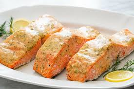

Salmon

Honey Mustard Baked Salmon
Dinner is 6 ingredients and 20 minutes away with this Honey Mustard Salmon. Honey mustard is an easy way to dress up salmon, and baking it in the oven means your hands are free to throw together a salad or other side dish.
Ingredients
- 1 1/2 to 2 pounds (680g to 900g) salmon fillets
- 3 tablespoons honey mustard (1 1/2 tablespoons honey plus 1 1/2 tablespoon Dijon mustard)
- 3 cloves garlic, minced (about 3 teaspoons)
- 3 tablespoons extra virgin olive oil (divided into 2 tablespoons and 1 tablespoon)
- 1 tablespoon lemon juice
- 1 tablespoon chopped fresh dill
- Pinch salt
Steps
- Preheat the oven to 400°F
- Make the honey-mustard glaze: In a small bowl, whisk together the honey mustard, garlic, 2 tablespoons of the olive oil, lemon juice, dill, and salt.
- Prep the salmon: Line a roasting pan with aluminum foil. Brush the salmon fillets on both sides with olive oil. Place fillets skin-side down (if your fillets have skin-on) on the foil-lined pan. Use a basting brush to coat the top side of the fillets with the honey mustard mixture.
- Bake the salmon: Place in oven and bake at 400°F for 8 to 10 minutes, until just barely cooked through (please don't overcook salmon!). It's okay if the salmon is still a little rare in the center, when you remove it from the oven, the residual heat will cook it through.